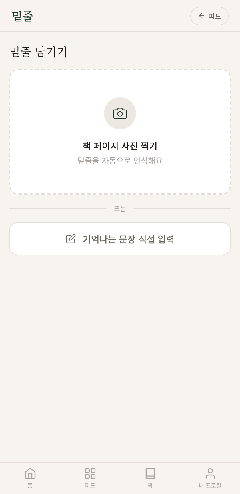
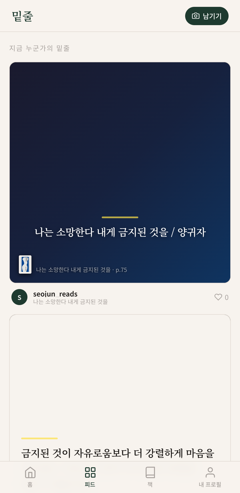
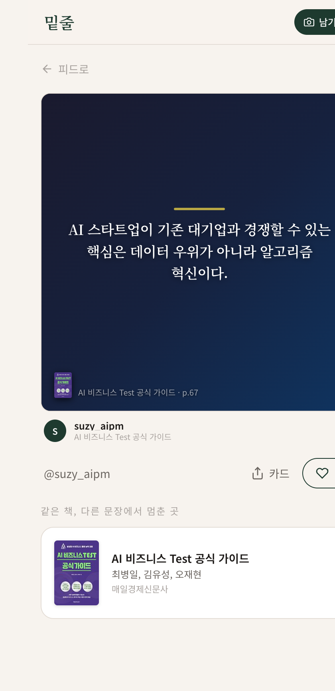
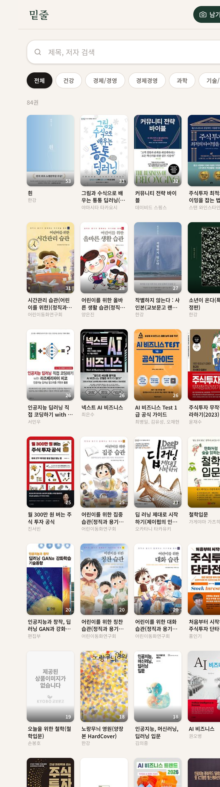
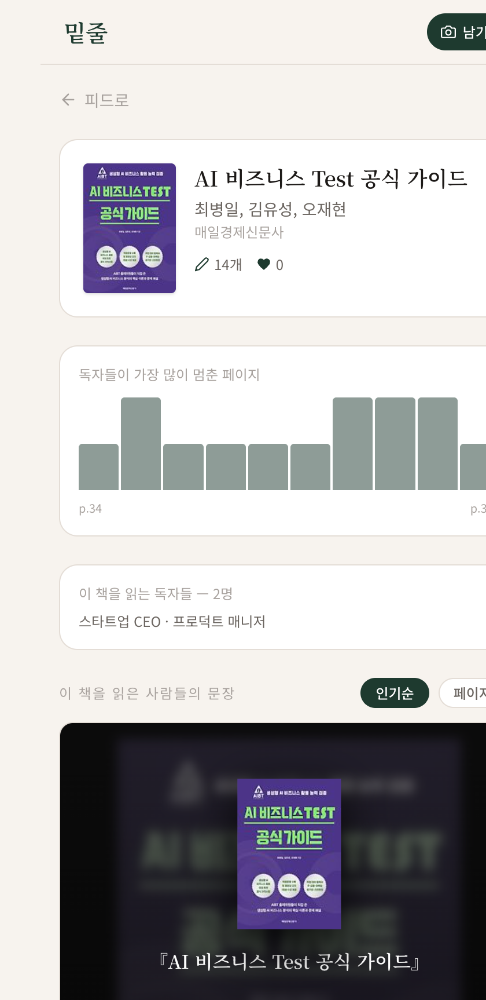

종이책을 읽다 밑줄 친 문장을 촬영하면, Claude AI가 문장과 책을 알아서 기록합니다. 그리고 같은 문장에서 멈춘 독자를 보여줍니다.





(주)얼리커뮤니케이션은 종이책 독자들의 밑줄 경험을 디지털화하는 소셜 독서 플랫폼 밑줄(Underline)을 운영합니다.
독자가 책을 읽다 형광펜·볼펜으로 표시한 문장을 사진 한 장으로 촬영하면, Claude Vision AI가 밑줄 친 문장과 책 정보를 자동 인식해 저장합니다. 저장된 문장은 소셜 피드로 공개되어 같은 문장에서 멈춘 독자들과 연결됩니다.
| 서비스명 | 밑줄 (Underline) |
|---|---|
| 핵심 AI | Claude Vision API (claude-sonnet-4-6) |
| 운영 현황 | MVP 프로덕션 운영 중 · 누적 밑줄 6,227건 · 등록 도서 264권 |
| 기술 스택 | Next.js 15 · Supabase PostgreSQL · Vercel |
Claude Vision API를 프로덕션에서 운영 중이며, 6,227건의 실사용 데이터로 핵심 파이프라인이 검증되었습니다. 이번 지원사업을 통해 현재 OCR·밑줄 감지에 집중된 AI 활용을 취향 분석 → 자동 태그 → 개인화 추천으로 확장합니다.
| 구분 | 역할 | 담당 업무 |
|---|---|---|
| 대표 (1인) | 개발·기획·운영 | 서비스 개발, Claude API 연동, 마케팅 |
| 채용 예정 (사업 완료 후) | 마케팅 담당 1인 | 저자 파트너십, 북클럽 이벤트 운영 |
| 현재 매출 | 0원 (MVP 검증 단계) |
|---|---|
| 실사용 데이터 | 누적 밑줄 6,227건 · 등록 도서 264권 · 가입자 약 100명 |
| AI 기술 지표 | Claude Vision OCR 정확도 95%+ · 한국어 종이책 특화 파이프라인 |
| 지식재산권 | 출원 준비 중 |
매출은 없으나 실사용 데이터 6,227건이 서비스 가치를 증명합니다. 본 사업 완료 후 6개월 내 프리미엄 구독 출시로 수익을 시작합니다.
| 비교 항목 | 명언앱/굿리즈 | Readwise ($9.99/월) | 밑줄 (무료) |
|---|---|---|---|
| 종이책 지원 | ✗ | ✗ | ✓ |
| 한국어 특화 | ✗ | ✗ | ✓ |
| 소셜 레이어 | ✗ | ✗ | ✓ |
| 문장 맥락 (독자 프로필) | ✗ | ✗ | ✓ |
Claude Vision API(claude-sonnet-4-6)를 프로덕션에서 운영 중입니다.
| AI 기능 | 역할 | 누적 처리량 |
|---|---|---|
| OCR | 책 페이지 전체 텍스트 추출 | 6,227건 |
| 밑줄 감지 | 형광펜·볼펜·동그라미 자동 인식 | 6,227건 |
| 책 식별 | 헤더/푸터 분석 → 카카오 도서 API 매칭 | 264권 |
단일 API 호출로 3가지 기능을 동시 처리(비용·속도 최적화). 이미 검증된 파이프라인 위에 이번 사업으로 취향 분석·추천 레이어를 추가합니다.
현재는 데이터 부족으로 Claude API가 모든 분석을 담당합니다. 밑줄·책·유저 데이터가 충분히 축적되면 자체 RAG(pgvector 기반 벡터 DB)로 단계적으로 전환해 비용을 낮추고 응답 품질을 높입니다.
| 구분 | 현재 (고도화 전) | 목표 (고도화 후) |
|---|---|---|
| AI 구성 | Claude API 전담 | Claude + 자체 RAG 병행 |
| 장르·태그 분류 | 수동 입력 | AI 자동 분류 → RAG 전환 |
| 유저 성향 분석 | 기초 행동 집계 | 직업·독서 패턴 심층 분석 |
| 동일 밑줄 분석 | 없음 | pgvector 유사도 클러스터링 |
| 책 요약표 | 없음 | AI가 책별 밑줄 전체 분석·요약 |
| 책 추천 | 없음 | RAG + Claude → 다음 책 3권 |
| 상황별 인용문 | 없음 | 직업·상황 입력 → RAG 검색 |
| 수익화 | 없음 | 등록 제한 + AI 기능 프리미엄 |
user_taste_profiles 테이블 이미 구축 완료. Supabase pgvector 확장으로 RAG 전환 시 인프라 추가 비용 최소화.| 기능 | 무료 | 프리미엄 |
|---|---|---|
| 월 밑줄 등록 | 10개 제한 | 무제한 |
| 소셜 피드·좋아요 | ✓ | ✓ |
| 공유 카드 테마 | 기본 3종 | 6종 + 워터마크 제거 |
| AI 책 요약표 | ✗ | ✓ |
| AI 상황별 인용문 추천 | ✗ | ✓ |
| AI 취향 피드·책 추천 | ✗ | ✓ |
| 인용 서비스 (출처+독자 맥락) | ✗ | ✓ |
| 시점 | MAU | 전환 | 월 수익 |
|---|---|---|---|
| 6개월 | 2,000 | 6% | 58.8만 |
| 12개월 | 12,000 | 8% | 470만 |
| 18개월 | 30,000 | 10% | 1,470만 |
| 멘토링 항목 | 기대 내용 |
|---|---|
| Claude API 비용 최적화 | 호출 최소화·캐싱 설계 — 수익화 전 비용 관리 핵심 |
| 인용 서비스 저작권 범위 | 공정이용 기준, 출판사 협력 범위 검토 |
| 출판사 B2B 계약 구조 | 밑줄 데이터 리포트 상품화, 계약 조건 설계 |
| 프리미엄 전환율 전략 | 월 10개 제한 적정성, 전환 유도 UX 설계 |
| 항목 | 금액 | 비중 | 상세 내용 |
|---|---|---|---|
| AI 추천 엔진 개발 | 1,600만 | 40% | Phase 1~3 구현(자동 태그·취향 피드·북 큐레이션) |
| AI 운영 인프라 | 800만 | 20% | API 서버 인프라 구축, DB 확장, CDN |
| 마케팅·홍보 | 800만 | 20% | 저자(200)·북스타그래머(250)·북클럽(150)·콘텐츠(100)·광고(100) |
| UI/UX 고도화 | 800만 | 20% | 모바일 UX 개선, 프리미엄 기능 구현 |
| 합계 | 4,000만 | 100% | 전액 자체 서비스 AI 활용모델 구현·고도화에 집행 |
| 지표 | 현재 | 6개월 목표 | 12개월 목표 |
|---|---|---|---|
| MAU | ~50명 | 2,000명 | 12,000명 |
| 누적 밑줄 수 | 6,227개 | 50,000개 | 400,000개 |
| 누적 가입자 | ~100명 | 5,000명 | 40,000명 |
| 공유 카드 생성 | — | 10,000장 | 100,000장 |
| 유료 구독자 | 0명 | 120명 | 960명 |
| 월 수익 | 0원 | 588,000원 | 4,704,000원 |
| 수익화 시작 사업 완료 직후 | 프리미엄 구독 + 도서 어필리에이트 출시 |
|---|---|
| 마케팅 채용 완료 후 3개월 | 저자 파트너십·북클럽 전담 |
| 출판사 B2B 완료 후 12개월 | 밑줄 데이터 리포트 상품화 |
| 투자 유치 준비 완료 후 18개월 | MAU 3만·유료 3천 달성 후 |
| 채널 | 방식 | 선정 이유 |
|---|---|---|
| 저자 파트너십 | "내 책 밑줄 데이터" 무료 제공 → SNS 홍보 | 저자 팬덤 자동 유입 |
| 북클럽·독서 모임 | 모임 체험 → 밑줄 공유 → 피드 형성 | 타겟 집결, 높은 전환율 |
| 북스타그래머 | 체험 기반 콘텐츠 협업 | 팔로워 신뢰 연결 |